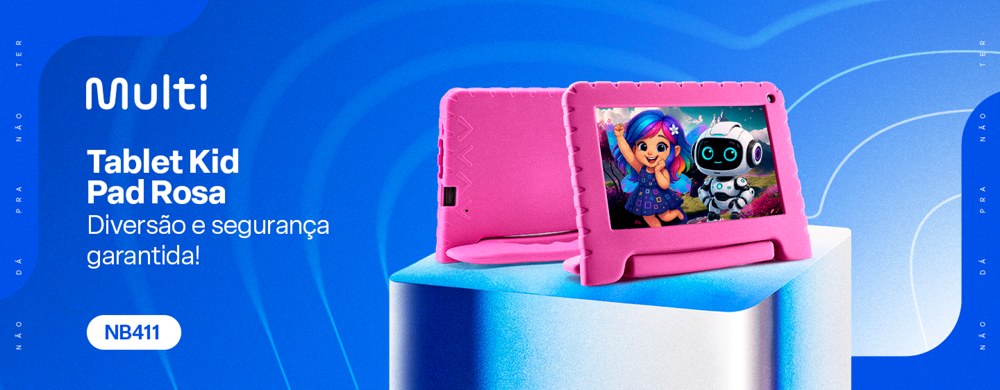

Tela 7” IPS
40% mais brilho

Memória de
4GB* + 64GB
Controle
parental
Conector
USB Tipo C
AndroidTM
13 Go Edition
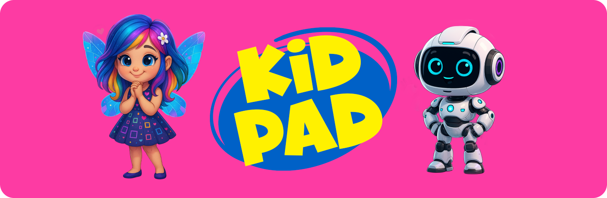

Tela 7” IPS
40% mais brilho
Memória de
4GB* + 64GB
Controle
parental
Conector
USB Tipo C
AndroidTM
13 Go Edition

O tablet é uma excelente ferramenta para
impulsionar
o desenvolvimento cognitivo,
disponibilizando aplicativos interativos e jogos
educativos
que estimulam o pensamento
lógico e aprimoram
as habilidades de
resolução de problemas.
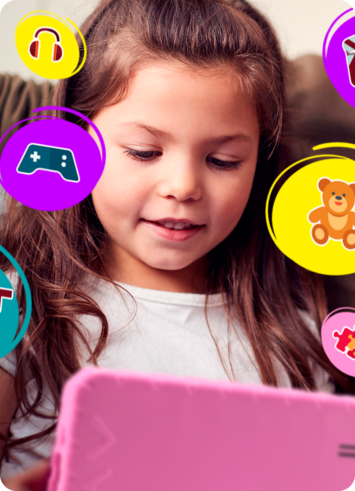
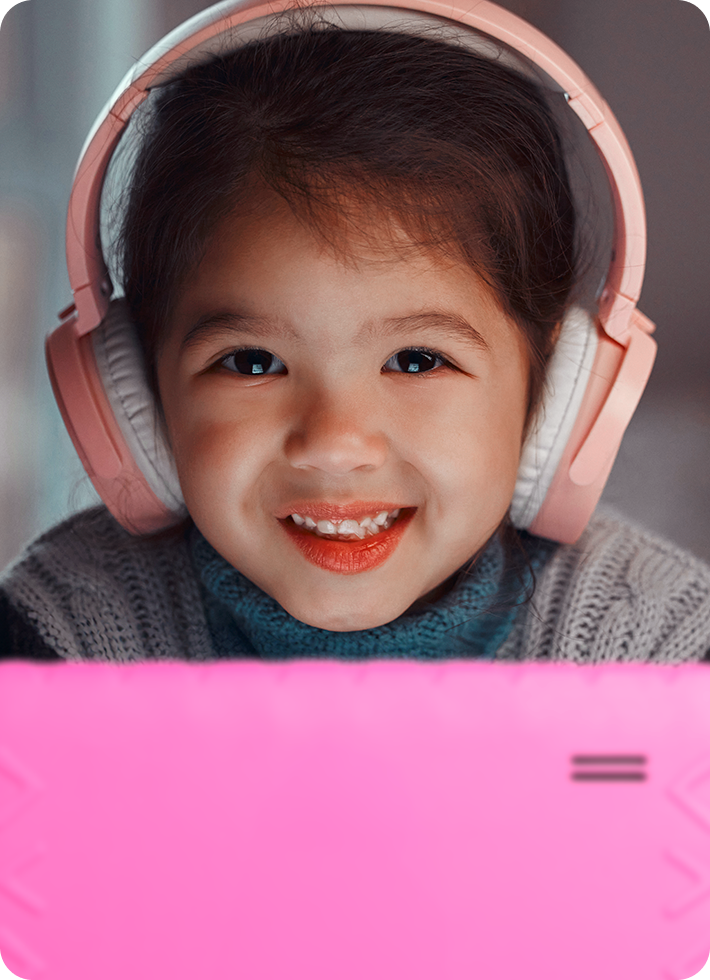
O uso de tablets na educação torna o aprendizado mais acessível e personalizado, adaptando-se ao ritmo de cada criança. Além disso, desenvolve habilidades tecnológicas e promove autonomia, preparando as crianças para os desafios futuros.
O tablet destaca-se como uma ferramenta essencial para estimular a criatividade das crianças, oferecendo uma ampla variedade de recursos artísticos e musicais que facilitam e tornam mais prazerosa a experiência de explorar e criar.
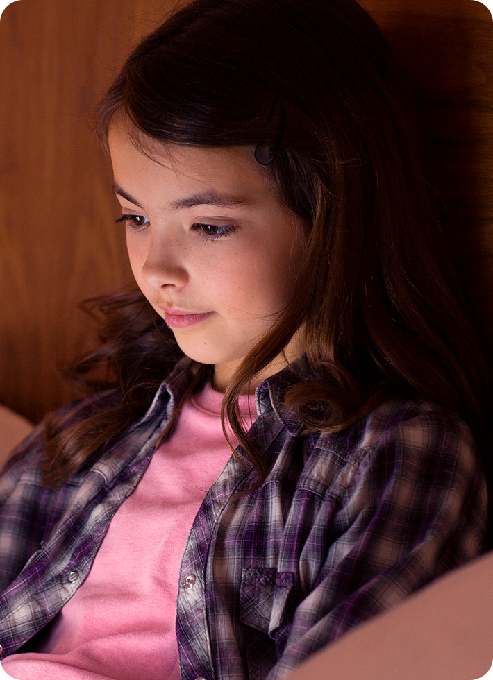
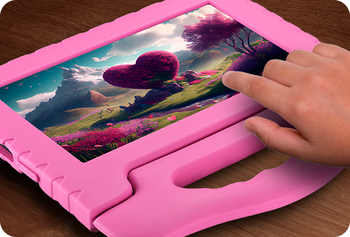
Com 64GB de memória, o tablet Kid Pad Rosa proporciona o espaço ideal para guardar tudo o que os pequenos adoram. De jogos, filmes e animações a fotos e aplicativos educativos que estimulam seu desenvolvimento e aprendizado de maneira divertida.
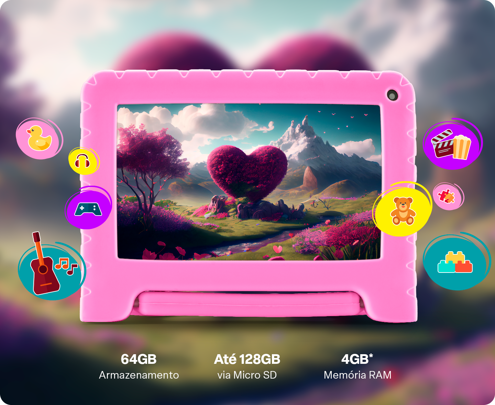
* 4GB de RAM sendo: (2GB interna + 2GB Virtual)
A memória virtual expande a capacidade da memória RAM do dispositivo, permitindo que o tablet utilize uma
parte da memória de armazenamento como memória RAM, melhorando a performance do tablet em até 30%
Com a câmera frontal, a criança pode observar seu crescimento, criar vídeos criativos, capturar fotos exclusivas e compartilhar tudo com a família. Essa experiência estimula a imaginação, aprimora suas habilidades artísticas e desenvolve um talento especial para contar histórias de forma cativante.
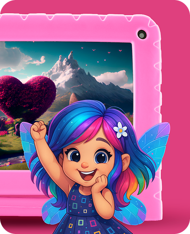
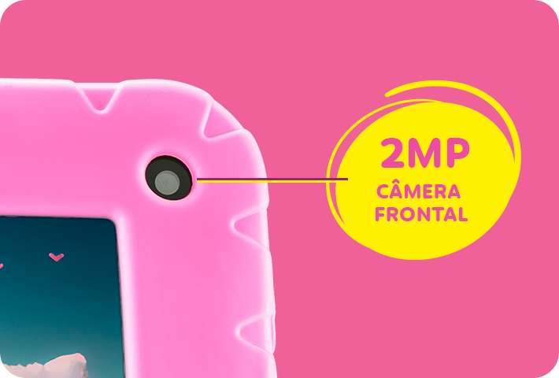
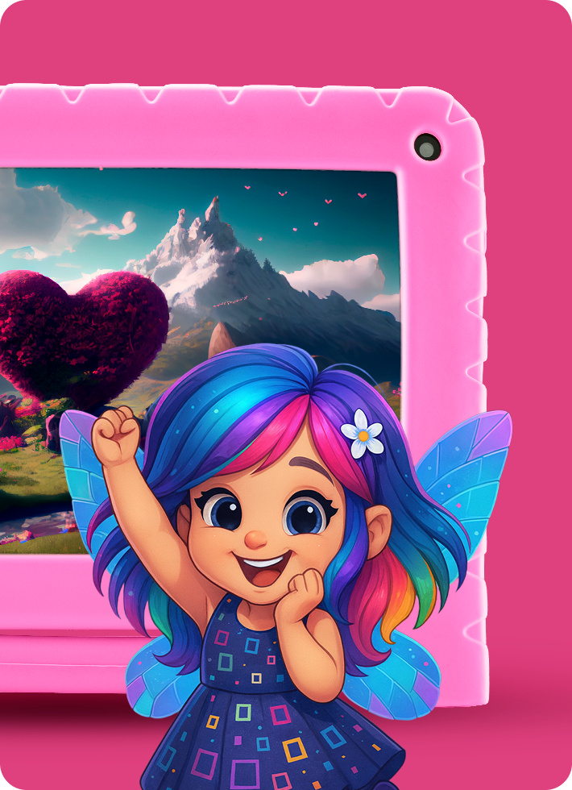
Com cores mais vivas e intensas, a tela IPS do novo tablet aprimora experiência visual, oferecendo imagens mais claras e uma visualização ampla de qualquer ângulo. Além disso, seu brilho 40% maior comparado ao modelo anterior proporciona uma imersão ainda mais profunda.
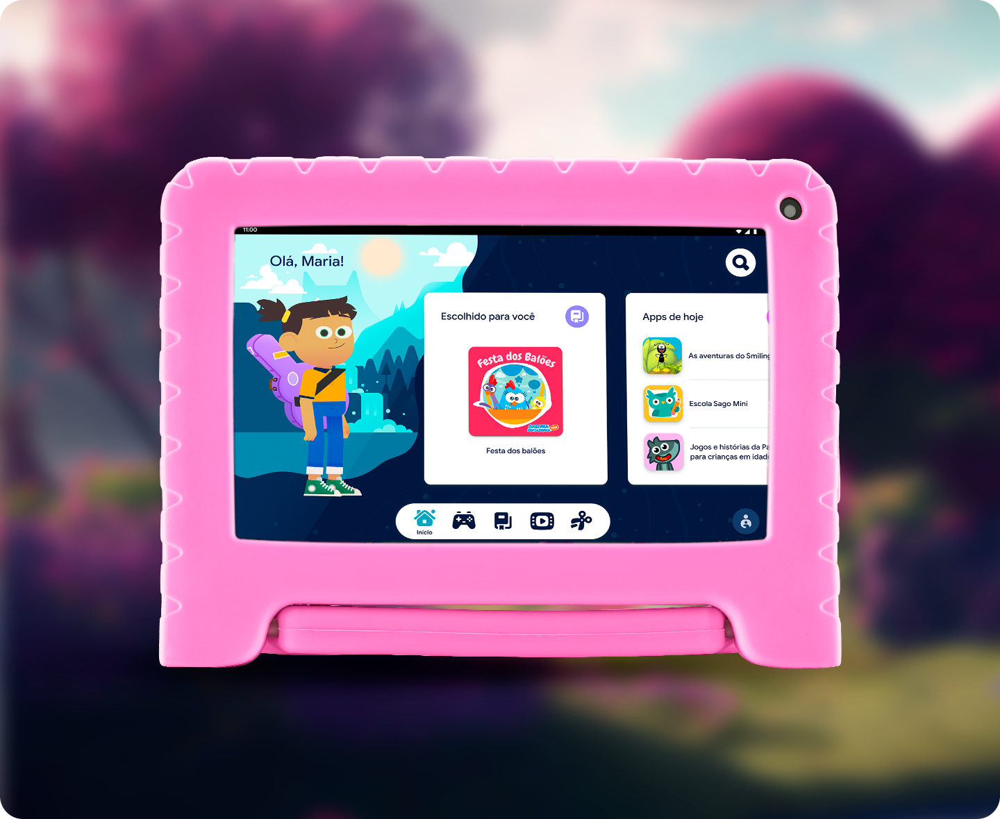
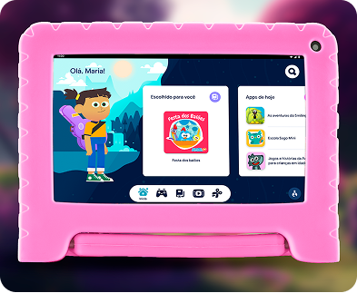
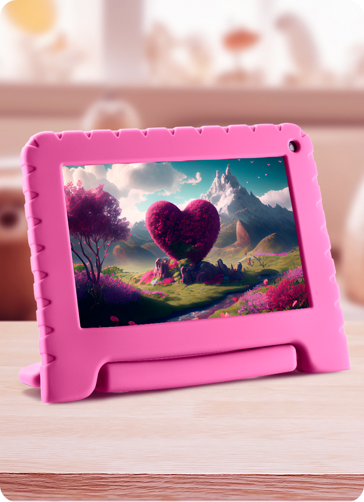
A alça regulável oferece maior conforto tanto para o corpo quanto para a visão da criança, permitindo seu uso em várias superfícies. Seja para estudar, assistir a vídeos ou desenhar, essa funcionalidade torna mais fácil a adaptação a diferentes atividades.
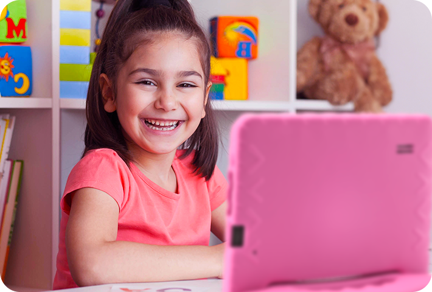
A Linha de Tablets Kids traz uma capa de silicone suave e agradável ao toque. Com bordas texturizadas, oferece maior conforto e minimiza as chances de o aparelho escorregar das mãos. Além disso, a case é projetada para suportar impactos leves e quedas, garantindo uma proteção extra ao dispositivo.
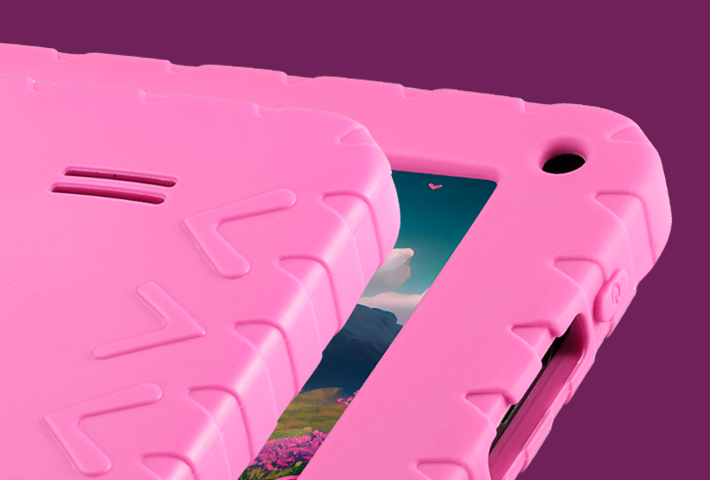
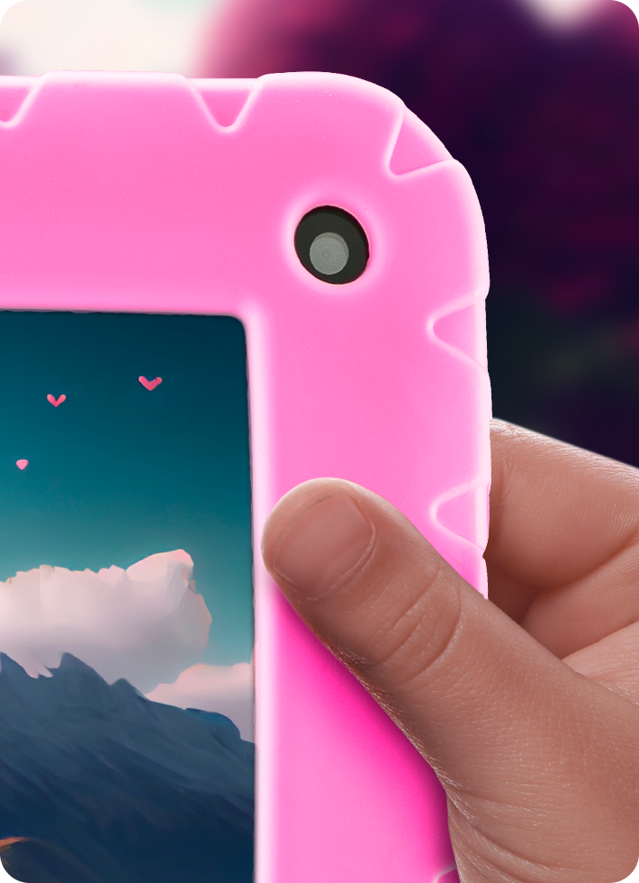
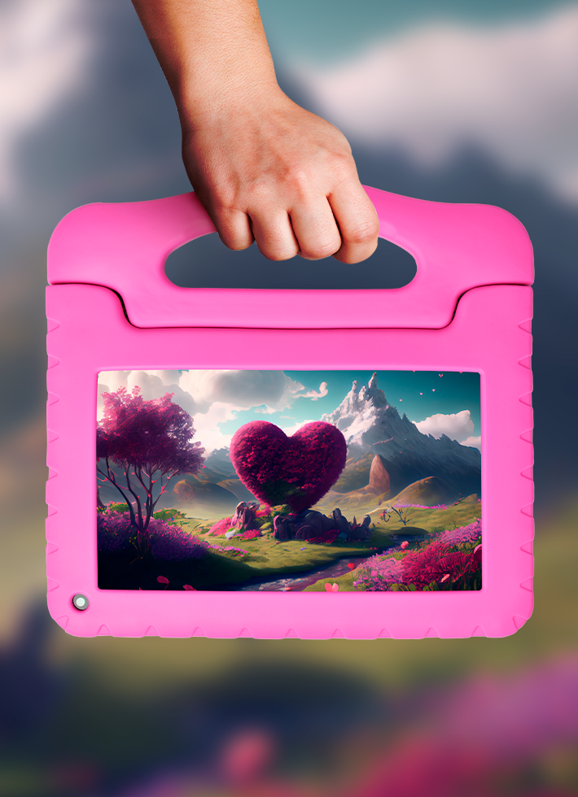
O Tablet Kid Pad Rosa vem com uma alça ergonômica, garantindo conforto e segurança para que as crianças possam levá-lo facilmente aonde quiserem.
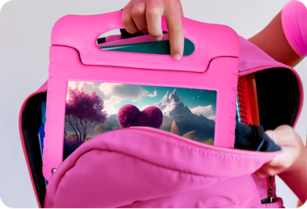
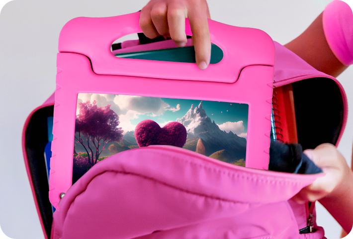
Com o Android 13, o tablet oferece uma série de vantagens. Desfrute de um desempenho superior e maior eficiência,com navegação mais rápida, além de novos recursos de personalização e proteção aprimorada para seus dados.
Desde o momento em que você liga o dispositivo, o Android trabalha para manter seus dados protegidos e em segurança. Com o Android 13, você tem mais controle sobre as informações que os apps podem ou não acessar, incluindo fotos específicas, vídeos e histórico da área de transferência.

O Android 13 tem recursos de segurança integrados para manter a segurança dos seus dados pessoais. Para maior proteção, quando um app acessar informações da sua área de transferência, você vai receber um aviso. Depois de um tempo, o histórico é apagado para evitar acessos indesejados.

O Google Kids Space foi criado para despertar a curiosidade e fomentar a criatividade
das crianças, incentivando-as
a explorar seus próprios interesses. Esse espaço oferece uma vasta
coleção de conteúdos de alta qualidade, como aplicativos, jogos, livros e vídeos.
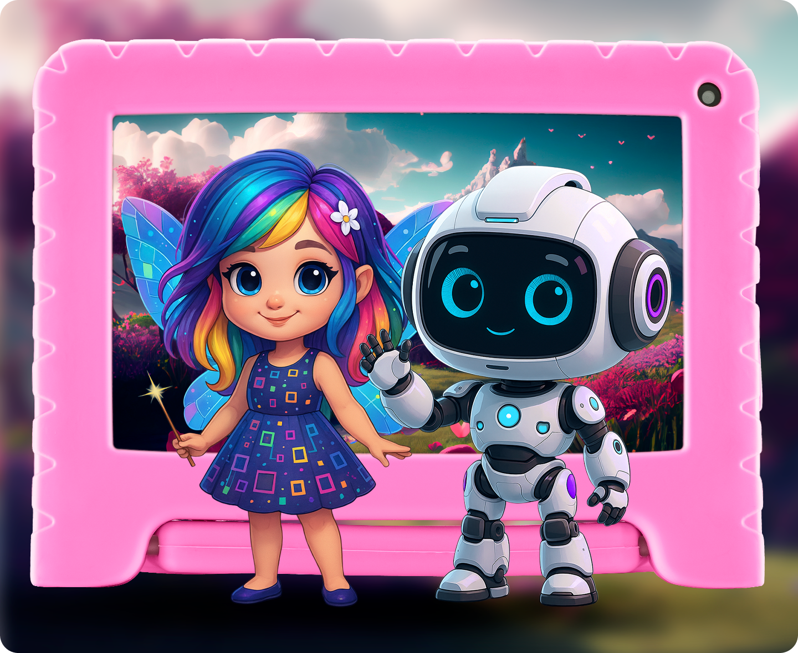
Gerencie o acesso dos seus filhos à internet de forma segura. Com a função de Controle Parental, você pode filtrar conteúdos inadequados, garantindo um ambiente digital mais saudável para o desenvolvimento deles.
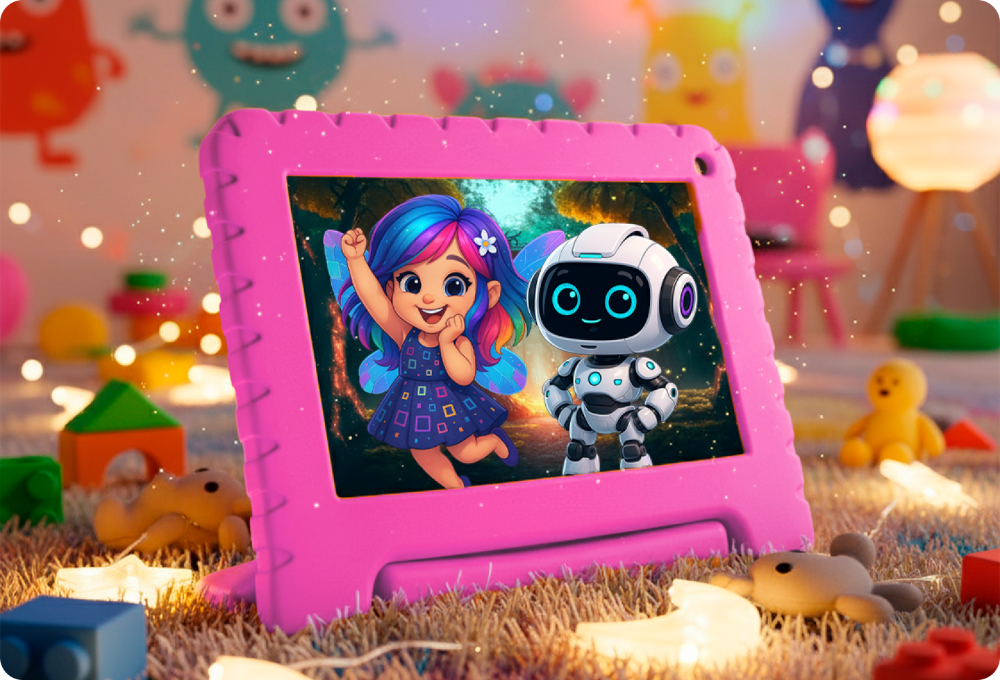